In conventional computer architectures, the hardware has no information about the location and size of programming language level objects like strings, structs and so on.
It is therefore the duty of the runtime of the used programming language to determine whether access to one such object still lies within the bounds of this object and prohibit the access in case of malformed access.
This leads to a runtime overhead which reduces program efficiency.
Also, in languages like C, those objects are identified using their address in form of a value only, the hardware therefore cannot distinguish between a reference to a high level object and some data value which might by chance have the value at which one such object lies.
This ambiguity between pointers and values makes it impossible to garbage collect unused objects in memory which is why in C it is necessary for the programmer to manually manage, ie allocate and free memory.
Being a difficult task to get right, this often leads to memory leaks. For this reason, other programming languages like Go store additional type information for every piece of data to distinguish between data and pointers.
This enables the removal of unused object from memory by the runtime with this process being called garbage collection.
Since the hardware doesn't know about this additional information that the runtime has access to, it is not possible to accelerate the task of garbage collection in hardware and therefore reduce the incurred runtime penalties.
To solve both of those problems, the inspiration for RISC-ViO, the experimental O-RISC architecture introduces data type information to identify pointers and object size information on the ISA level while abstaining from tag bits.
This enables both the enforcement of bounds checks and garbage collection in hardware, leading to more robust program execution as well as less runtime overhead.
O-RISC also introduces mechanisms to enforce pointer integrity to ensure memory access is limited to regions to which a program has pointers.
View of the different architectures on programming language level objects in memory
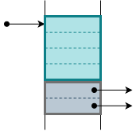
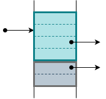
a) Conventional architectures
b) O-RISC
c) RISC-ViO
While the O-RISC architecture provides a solution to the problems identified above by providing a new perspective on the cooperation of hardware and software, it comes with some drawbacks.
One of those drawbacks lies in the fact that O-RISC only allows pointers to the beginning of an object.
Indexing of an objects content is achieved by providing an offset inside the object via an additional value from a register.
Accesses to data inside of objects in O-RISC therefore are a two-step process.
This in consequence makes O-RISC incompatible to the influental C programming language, reducing the amount of programs being source code compatible with this architecture.
RISC-ViO aims to provide the pointer unambiguity, the pointer integrity and the bounds checks which O-RISC provides while still allowing for pointers inside of objects, enabling compatibility to the programming language C and others.
Furthermore, while O-RISC is a fully custom architecture with fully custom instruction format, RISC-ViO is based upon the open RISC-V architecture which allows for easier integration and expansion of this new architecture.
In order to enforce the usage of bounds checks and pointer unambiguity measures, RISC-ViO alters the semantics of some of the instructions which are part of the RISC-V I base instruction set.
This alteration of the RISC-V base ISA is denoted as the RISC-V I' ISA.
In order to restrict access of a program to the memory which contains the objects the program has pointers to, the I' ISA differentiates between values and pointers.
Only pointers may be used to access memory as well as I/O devices. Those pointers can be obtained via the alc instruction family or by being manually created and passed down by higher privilege modes. Pointers are to be encoded in such a way as to allow for objects to lie in the entire address space of the processor of XLEN bits.
In this specification, pointers are written in the form x.y where x is a pointers value (base address + tag) and y is the index of the pointer. To graphically set apart pointers from values, pointers are drawn in various shades of pink and purple.
Values are not denoted in any special way in text form but drawn in light blue.
The most obvious change is necessary in regard to load and store instructions. The main change for those instruction families lies in them requiring pointers to be used to select memory locations.
Offsets from those pointers using the 12 bit immediate present in those instructions are still allowed. Arithmetic operations of those pointers like additions or subtractions are also still allowed and modify the pointer as a regular address would be modified by the executed operation.
The base address information as well as the size information are not influenced by those operations, however.
To enforce this new addressing scheme, the processor will raise a IncompatibleTypeException when a program tries to use an address value to access memory.
Since the object attributes for every object referenced by a pointer are known, the processor is able to raise a IndexOutBoundsException when an out of bound load or store instruction is executed.
In case of such an exception, xtval will contain the base pointer as well as the index which was beyond the object bounds.
The processor is also able to detect whether the destination object is compatible with the current access type. In consequence, LoadAccessFault, StoreAccessFault or IncompatibleTypeException will be raised accordingly as per ordinary objects.
While in general, I/O pointers behave the same way as pointers to objects in memory by allowing stores and loads with offsets, there are some restrictions when using them.
Most notably, while it is perfectly fine to store a pointer inside an object, the same is not true for I/O devices.
Storing a pointer in a I/O device identified by an I/O pointer will lead to an IncompatibleTypeException. This simplification reduces the complexity of the task of garbage collection.
Apart from objects for regular data storage the I' ISA also manages the stack as a series of objects. This partition of the stack in a single frame per function allows for further security mechanisms but also requires cooperation by the program.
Most notably, the stack is not grown by arithmetically modifying the stack pointer. Instead, the program has to manually allocate a new frame object. Once this frame object has been allocated, accesses to inside this object behave just the way the stack frame in RISC-V behaves.
Due to the stack pointer register now containing a pointer, I' is able to protect older frame objects from accesses by arithmetical modification of sp.
The implications for the passing of function arguments between functions are outlined in the calling convention chapter.
Just as data on the stack and heap is organised by means of objects, instructions are also encapsulated in objects. This means that the auipc instruction will emit a pointer instead of a value.
Due to the access to those executable objects being limited as described in the executable objects chapter however, access to constant data is not possible using this pointer.
The encapsulation of instructions also means that the jalr instructions expects a pointer to a object containing instructions as a jump target to be written to the program counter.
If the pointer provided does not reference such an object, the processor raises a IncompatibleTypeException with xtval containing the target pointer.
Using a value as a destination for jalr is still allowed though and leads to jumping to the given index inside the currently executed code object.
In addition to the modifications of already existing instructions which are part of the RISC-V I base ISA, RISC-ViO introduces several instructions as an interface between software and hardware regarding objects.
Those instructions are all part of the zhm ("heap management") extension.
Since RISC-ViO manages objects on the ISA level, the ISA has to provide a means to create new objects and their corresponding pointers.
In contrast to the automatic freeing of unnecessary objects, this creation of ISA level objects is achieved by the alc-instruction family which comes in four flavours.
In fact the alc instruction family is the only way to obtain new pointers in user mode.
The next section provides a short description of those instructions alongside their bit encodings.
The objects allocated by the alc-instruction family are both readable and writeable on allocation.
The alci instruction is the most basic form in its family. This instruction allows the allocation of a regular object where the size of the object is given by the 12 bit wide immediate.
This immediate specifies the amount of pointers which can fit inside the object. So for a XLEN of 32, it specifies the number of 32 bit words that fit into the object.
alci instruction encoding
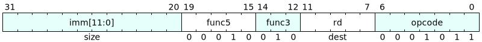
When the alci instruction is used to allocate a frame by specifying sp as the destination register, its semantic is extended. In this case alci not only allocates a new frame object but also stores the old sp at index zero of the new frame object.
The alci instruction may trigger the following exceptions for the given events (xtval content):
HeapOverflowException: Allocating the specified object would overflow the heap. (object_size as value)
The alc instruction is a variation of the alci instruction. In contrast to alci, the size of the new object is given by the content of register rs1.
The size is given in bytes as per the value in rs1.
Apart from the source of the object size, alc only differs from alci in that alc cannot be used to allocate a frame.
alc instruction encoding
The alc instruction may trigger the following exceptions for the given events (xtval content):
HeapOverflowException: Allocating the specified object would overflow the heap. (object_size as value)
IncompatibleTypeException: rs1 contains a pointer, not a value (rs1)
The alcid instruction is a specialisation of the alci instruction. While alci allocates an object which may hold both pointers and data, objects created using alcid may only hold data.
Also, using alcid to create a new frame is forbidden.
alcid instruction encoding
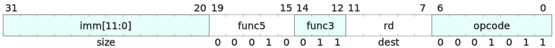
The alcid instruction may trigger the following exceptions for the given events (xtval content):
HeapOverflowException: Allocating the specified object would overflow the heap. (object_size as value)
The alcd instruction is the analogous form of alc regarding data only objects. It differs in the type of allocated object and in that it also is prohibited from allocting frames.
alcd instruction encoding
The alcd instruction may trigger the following exceptions for the given events (xtval content):
HeapOverflowException: Allocating the specified object would overflow the heap. (object_size as value)
IncompatibleTypeException: rs1 contains a pointer, not a value (rs1)
The qsz instruction proviodes a means of reading an objects size as specified at its allocation time in bytes. For this, the source register has to contain a pointer.
qsz instruction encoding
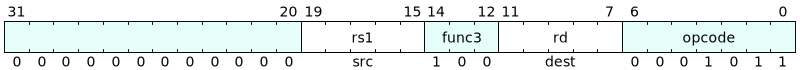
The qsz instruction may trigger the following exceptions for the given events (xtval content):
IncompatibleTypeException: rs1 contains a pointer, not a value (rs1)
ForbiddenDstException: rd is sp which only takes pointers (-)
With the instructions described above, it is impossible to break out of the restrictions given by the bounds check and pointer integrity safety measures. To enable the management of the processor system additional instructions are available for all privilege modes above the user mode.
In order to be able to create and inspect pointers a total of three instructions are provided. These allow for both reading out the integral parts of a pointer as well as creating arbitrary pointers.
The dtp "data to pointer" instruction allows the assembly of arbitrary pointers. Both the index as well as the raw pointer value are set according the values in registers rs1 and rs2 respectively. The result is stored in rd.
dtp instruction encoding
The dtp instruction may trigger the following exceptions for the given events (xtval content):
IncompatibleTypeException: rs1 or rs2 contains a pointer, not a value (rs1 or rs2 with rs1 being prioritised)
The btd "base to data" instruction allows for reading out a pointers raw pointer value. This value is written into rd for the pointer given in rs1.
btd instruction encoding
The btd instruction may trigger the following exceptions for the given events (xtval content):
IncompatibleTypeException: rs1 contains a value, not a pointer (rs1)
The itd "index to data" instruction allows for reading out a pointers raw pointer index. This value is written into rd for the pointer given in rs1.
itd instruction encoding
The itd instruction may trigger the following exceptions for the given events (xtval content):
IncompatibleTypeException: rs1 contains a value, not a pointer (rs1)
Since the I' ISA abstracts the memory access on ISA level from the actual memory access the hardware performs, it is not guaranteed that a store or load instruction accesses the given memory location or stores the given register data in unmodified form.
This instruction enables the software to force the hardware to load a word from a given access given by rs1. This address may either be a pointer as well as an address value.
After the execution of this instruction, the register selected by rd contains the value of the memory at address rs1.
lw.x instruction encoding
This instruction enables the software to force the hardware to write a word to a given access given by rs1. This address may either be a pointer as well as an address value.
The register rs2 which provides the store data has to contain a value. Please note that although the theoretical order of the registers is sw.x rs1, rs2, the value to be stored comes first in assembly files.
This makes the argument order of sw.x analogous to the regular memory access instructions to avoid confusion regarding this order.
sw.x instruction encoding
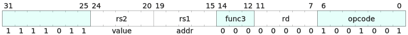
The sw.x instruction may trigger the following exceptions for the given events (xtval content):
IncompatibleTypeException: rs2 contains a pointer, not a value (rs2)
In order to protect the local data as well as control flow data of a function, RISC-ViO alters the concept of what is called a stack in conventional architectures.
To protect the stand-ins for this stack, the so-called frame objects or frames, from malicious or accidental modification by foreign functions, RISC-ViO introduces additional protection mechanisms for these frame objects.
Frame objects are based on regular objects but differ in the accesses which are allowed on them.
Frame objects are never data only which means the data only bit in their header is cleared while the frame bit is set.
To protect both the stack pointer sp as well as the return index ra, in frame objects special slots are reserved. For the 'stack' pointer sp, the pointer to the previous frame object, the first slot of XLEN size at byte index zero is reserved.
This is immediately followed by the ra slot which is also XLEN wide. For XLEN=32, this slot resides at byte address 4.
In the user mode, these slots of a frame object are only allowed to be used to store or load their respective register. Any other operation on these slots will lead to a ForbiddenDstException or ForbiddenSrcException.
Note that it is not only prohibited to store any other register than sp and ra in those slots, but also to store these registers anywhere else when in not in a privileged mode. The same restriction also applies when loading these registers.
This restriction is also enforced using ForbiddenDstException and ForbiddenSrcException.
A Frame Object for XLEN=32
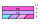
All other slots are general purpose and access to them is not restricted in any way.
As described in the introduction to this chapter, RISC-ViO denies foreign access to frame objects. As a consequence, the calling convention has be modified slightly from the convention used by RISC-V.
Namely, it is not possible to spill function arguments from registers onto the stack of the receiving function. Instead, the following scheme is employed:
Just as is the case for conventional RISC-V, the arguments are stored in the registers a0 to a7 given that there are no more than eight XLEN arguments or as many arguments as will fit in those registers.
Instead of pushing the additional arguments that will not fit in the argument registers on the stack, a spill object of corresponding size has to be allocated. A pointer to this spill object is placed in a7 and the remaining arguments are stored in this object.
To achieve protection of frames from foreign accesses RISC-ViO uses so-called colour tags for both the sp and the ra register.
By updating those colours at critical points such as function entries and frame allocations, the processor always knows whether the frame pointed to by the
sp register is owned by the currently executed function.
This state is called "regular", while the current function not being the owner of the current frame is denoted as the "irregular" state.
For sp as well as for ra, there are two colours: black and white. Those colours are an integral part of those registers and cannot be read or modified seperately from their registers.
Also, when storing/loading ra or sp using sw/lw, the colour is also stored/retrieved to/from the given memory location.
An overview of the transition between those colours is given in Figure 1.
On every function entry, the processor flips the colour of ra from white to black or vice versa. For sp, this takes place on every frame allocation.
Whether the processor is currently in the regular state (light blue), is given by the equality of the colours of ra and sp.
If the colours of sp and ra both were black for example, the processor would be in the regular state.
Any access to the current frame while in irregular state leads to a StateException indicating access to a foreign frame.
Colour transitions
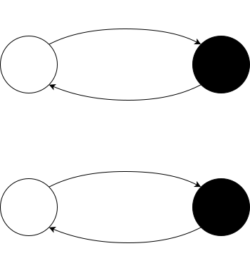
Figure 2 provides two sample program flows for which the colour and therefore state transitions are shown.
Figure 2a) shows the behaviour of the colour mechanism during the execution of a correct stream of instructions while figure 2b) highlights how this mechanism catches bad program behaviour.
In 2b) the colour mechanism spots function b trying to access function a's frame, which leads to the processor raising a StateException.
State transitions for examplary instruction streams
a) Transitions during normal program flow
b) Transitions during abnormal program flow with exception
Since RISC-ViO allows both pointers and regular data to be stored in the registers and also organizes code using objects, some CSR also need to be able to hold pointers.
This is the case for xtvec and xepc due to code objects and for xtval and xscratch due to pointers in general.
To access the components of these registers, the csrw instruction may be used in conjunction with the dtp/btd/itd instructions.
Apart from this slight modification as well as the expansion of available exceptions, exceptions and interrupts behave identical to the way they do in RISC-V.
The exception table provides an overview of the exceptions corresponding to the protection schemes introduced by RISC-ViO.
In order to allow higher privilege modes to gain the access required for system management, some exceptions are suppressed in certain privilege modes.
The RISC-ViO architecture requires a register file which is able to hold the following information:
tag (pointer or value?) for each register except zero
values (XLEN) for each register except zero
pointers with indeces (XLEN) for each register except zero
pointer colours for ra and sp
Apart from these requirements, RISC-ViO does not specify how a register file of an implementation of this architecture has to look like.
This leaves room for tailoring the implemented register file to the design constraints at hand.
The subarchitecture implementation offered here is meant only as an example implementation and is focused on higher performance while requiring more hardware resources. The register sections required by the RISC-ViO specification are denoted with 'ISA' while sections introduced by this particular implementation are denoted with 'IMP'. In this implementation, the 'IMP' sections are exclusively made up of object header metadata drawn in green.
An example implementation of a RISC-ViO register file
As described in the frames chapter and as present in the requirements list above, RISC-ViO calls for the ability to hold colour information for both the ra as well as the sp register.
The implementation presented here is able to satisfy this requirement using the fields as shown in the last section only. In this implementation, the colour 'black' is encoded as a cleared bit ('0') while 'white' corresponds to a bit which is set ('1').
Since the smallest possible instruction size specified by RISC-V is 16 bits or two bytes, the lowest bit of the index of ra always has to be zero.
This is why it is possible to encode the current colour of ra in this bit. For sp, the same is not true however since its index may be set to any value.
The colour of sp is instead stored in the current frames header copy in the register file. More specifically, the colour-bit in this header is used for storing sp's colour.
In order to distinguish pointers from values, the provided implementation uses a tag bit for all registers which may hold both values or pointers. Values are tagged as '0' while pointers are identified by a '1' bit.
Since on ISA level, RISC-ViO only distinguishes between regular an I/O pointers, only a single bit in the register file is required to keep those pointer types apart.
This bit is interpreted as part of the pointer and is added to the right of the pointer base address or I/O device number for I/O pointers.
The provided implementation example of the RISC-ViO architecture by using the object structures outline above implies new requirements for a processor pipeline supporting this implementation.
In the next sections, a possible subarchitecture meeting those requirements shall be described.
In the presented implementation, all members of the alc instruction family place both regular data objects as well as frames objects on the heap.
There the objects lie in allocation order until a garbage collection cycle occurs.
In the process of such a cycle, objects may be moved or overwritten in case of not being required anymore.
The allocation process starts by calculating the address of the address of the new object header.
This is given by rounding down the value given by the expression
down to next number divisible by 16. If this value is larger than malc.ptr the new object fits inside the heap and malc.ix is updated to this value.
In this case, a pointer tag is added to the newly calculated address and the resulting pointer value is written to the target register.
The initial index is set to zero. Additionally, the object header is written to memory via the attribute cache.
As the subarchitectural implementation requires some flag bit from the object header as well as its length or lambda field, those fields also have to be retrieved from memory when loading a pointer.
As the outlined subarchitecture keeps the length of the corresponding object for each pointer in the register file, it is possible to check for an out of bound access as soon as the actual access index is available.
This can be the case as early as in the execute stage, which allows for early raising of IndexOutBoundsExceptions.
Since an objects flags which signify it as being readable, writeable and data only are also available as soon as the pointer to this object is available in the processor, the conditions for LoadAccessFault and StoreAccessFault exceptions can also be tested for just as early.
After system reset, all registers are initialised with the value zero. Also, both malc and msad contain the value 0x0.0x0.
The subarchitectural registers that contain the current code object length and index are also zero.
The code object initially executed is 0x7, so its header should be located at address zero and instructions should start at address 0xC.
To set up this register as well as gp, a system software should start with the following instruction sequence:
0x7.0x0: li t0, 0b111 # create pointer to codeobject at address zero
0x7.0x4: dtp t0, t0, zero # turn the value into a pointer
0x7.0x8: jalr zero, t0, 12 # jump in there (should jump to the instruction just after this jalr)
After this, it is recommended to set both malc as well as msad to reasonable values using the csrw instruction.
Since the processor starts up in the irregular state, this should be followed by an alc or alci instruction to get into regular state and be able to call functions.
The provided behaviour of the example of an RISC-ViO implementation can be further specified. This list provides a incomplete list of recommendations for such an implementation:
The dtp instruction should only load the header of a pointer if a valid pointer is specified via the rs1 register. Otherwise, the header and length fields in the pipeline should be set to 0.
 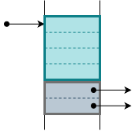
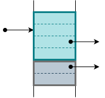
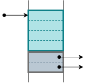
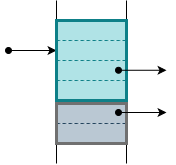